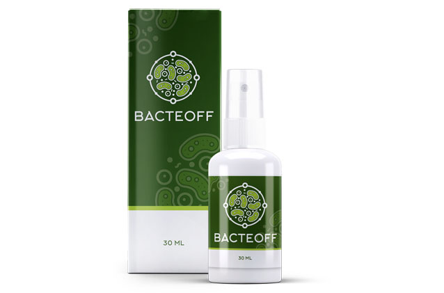

В последние время участились случаи заражения паразитами. Это связано с меняющейся экологической и климатической обстановкой. Уберечься от заражения очень сложно. Микроорганизмы научились приспосабливаться к новым условиям, в которых ранее погибали. Паразиты проникают к нам через кожу, воду и продукты. Как определить признаки и избавиться от паразитов при заражении, расскажет врач-инфекционист с 20-ти летним стажем, доктор Алан Медисон.
– Здравствуйте, доктор. Скажите, пожалуйста, каковы симптомы заражения паразитами?
– Здравствуйте. Некоторые симптомы специфические (например, анемия при дифиллоботриозе). Наиболее частыми принят считать:
- нарушения сна;
- подавленное состояние;
- частые простудные заболевания;
- общая слабость;
- нарушение пищеварения;
- аллергические реакции;
- сухой кашель;
- зуд и сыпь на коже;
- повышение температуры.
– Бывает ли бессимптомное течение? И всегда ли врачи-инфекционисты могут поставить правильный диагноз?
– Бессимптомное течение характерно для любой хронической патологии. Поэтому людям из групп риска два раза в год необходима профилактика от паразитов. Что касается диагноза, то ошибки диагностики, к сожалению, случаются. Они связаны с неправильным выбором метода, либо неправильной интерпретацией результата.
– А как можно обезопасить себя от заражения?
– Существуют простые правила:
- Соблюдать личную гигиену – необходимо мыть руки после контакта с землей (пылью, грязью). Овощи, ягоды и зелень тщательно промывайте проточной водой, ополаскивая после этого кипяченой (аскаридоз, токсокароз, энтеробиоз, трихуриаз).
- Следить за качеством потребляемой воды – пить только кипяченую воду (лямблиоз).
- Есть только проверенную пищу – необходимо тщательно термически обрабатывать мясо. Стараться покупать его в крупных торговых точках, куда оно поступает, проходя ветеринарный контроль (токсоплазмоз, трихинеллез, тениоз, тениаринхоз). Рыбу нужно перед готовкой промораживать при температуре ниже 20 °C. Опасно употреблять слабосоленую и копченую рыбу (описторхоз, дифиллоботриоз).
- Следует избегать общения с бродячими животными – домашних питомцев необходимо глистогонить строго по ветеринарному графику (эхинококкоз).
- Обязательно принимайте профилактические средства – лучше всего использовать натурального происхождения без синтетических добавок.
– Если придерживаться этих правил, то есть ли 100%-ная гарантия? И какие профилактические средства вы посоветуете?
– Выполнение этих рекомендаций может свести вероятность инфицирования паразитами к минимуму, однако полностью исключить возможность случайного заражения довольно сложно. Новое средство для профилактики и лечения паразитов Bacteoff необходимо при контакте с зараженными, в сложных для соблюдения гигиены условиях, при приеме плохо обработанной пищи и воды.

– Я слышала, что прием синтетических лекарственных средств для профилактики опасен.
– Я забыл сказать самое главное – Bacteoff полностью натуральное и безопасное для человеческого организма средство. Именно поэтому я и мои коллеги успешно ввели в его свою практику.
– В чем же особенность данного средства?
– Если отвечать коротко, то Bacteoff первый препарат, который борется и очищает организм от паразитов, их яиц и выделенных токсинов. И самое важное – создает защитный иммунный барьер, который не дает повторно заразиться и восстанавливает поврежденные ткани.
– Как действует препарат на паразитов и как создает защитный барьер?
– Bacteoff парализует нервную систему паразита, из-за чего он не может двигаться, открепляется от своего места пребывания и выводится из организма. Паразиты разрушают наш иммунитет, органы и нервную систему. Поэтому антитела препарата действуют еще долгое время после окончания курса. Например, если к вам попал какой-либо вид паразита в организм, он не успевает нанести вред организму, так как его нервная система моментально разрушается и он выводится естественным путем. Именно поэтому Bacteoff рекомендуется для регулярной профилактики и борьбы при заболевании. Поэтому так важно пропивать полный курс препарата.
– За счет чего такой эффект, это какие-то новые действующие вещества?
– Нет, действующие вещества в составе давно открыты и их эффекты хорошо изучены. В Bacteoff учтены все мелочи, вплоть до восстановления организма после болезни. Стоит отметить, что экспериментально доказана его клиническая эффективность и безопасность. Это подтверждено международными сертификатами.
– Где можно приобрести это средство?
– Так как препарат новый, его можно заказать только через официальный сайт производителя. Удобство в том, что вам не нужно ходить, искать. Bacteoff привезут прямо на дом.
– Спасибо большое за такое информативное интервью. Я уверена, что многие наши читатели смогли найти ответ на свой проблемный вопрос.
– Спасибо вам за приглашение. Желаю вам никогда не болеть и соблюдать простые правила, чтобы не заразиться. Всего вам хорошего, до свидания.